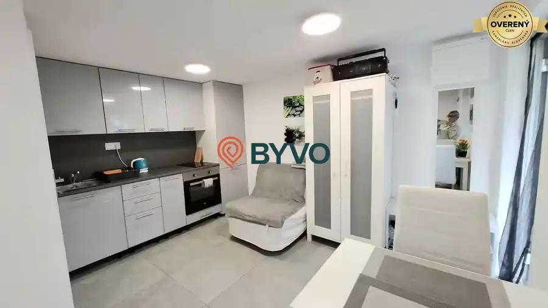
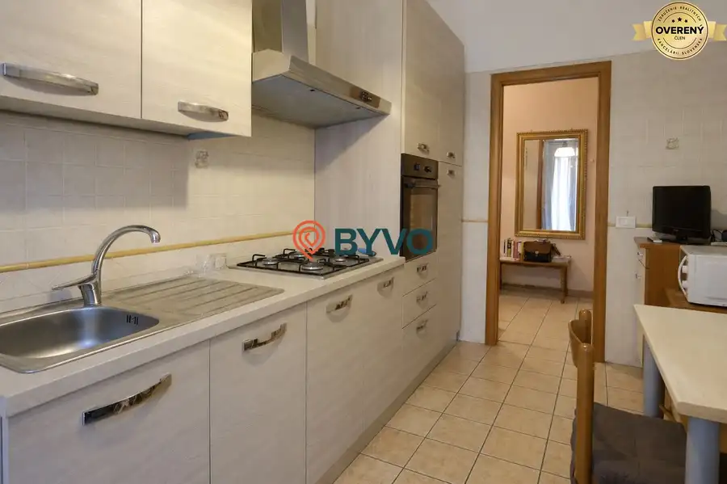
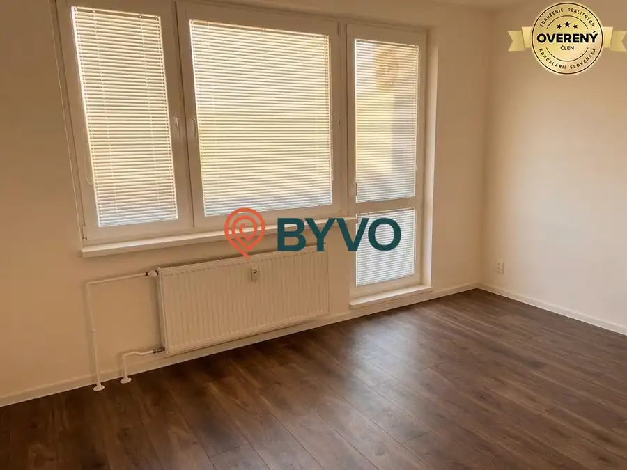
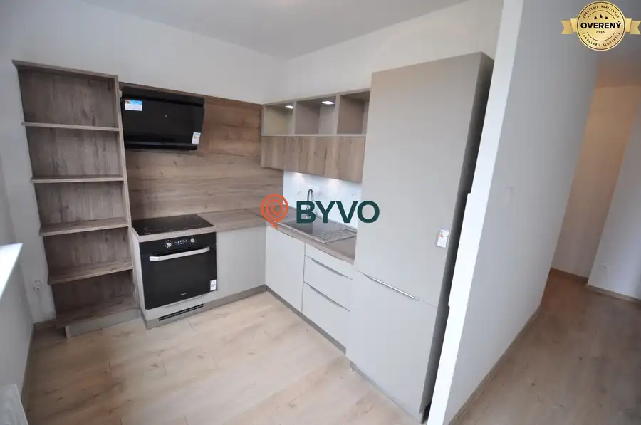
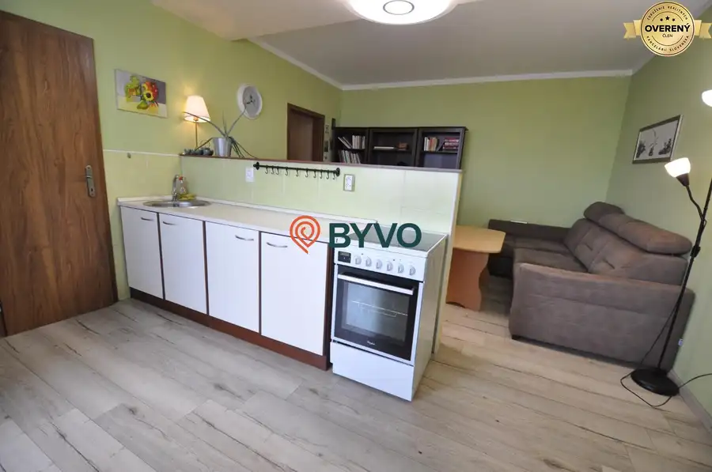
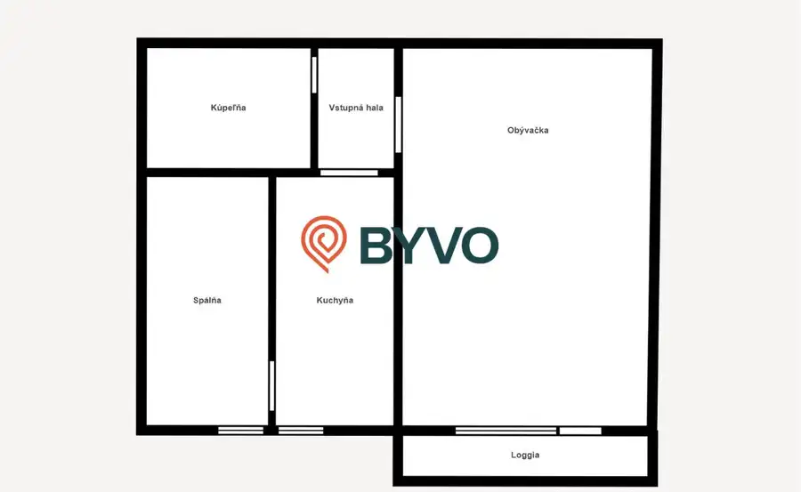
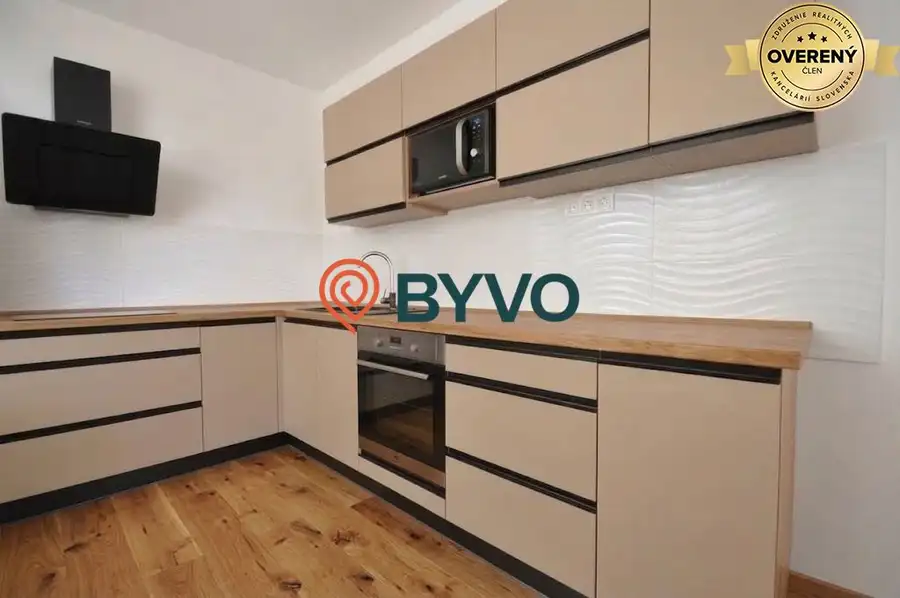

Aktuálna ponuka
Nehnuteľnosti, ktoré ponúkam
7 nehnuteľností na predaj a prenájom. Vyberte typ, alebo napíšte lokalitu.
7 z 7 ponúk

Byt9 135 000 €Celoročne obývateľná chata s 247m2 pozemkom za cenu garsónky Trnávka, Bratislava 1-izbový22 m² BYVO ponúka na predaj útulnú celoročne obývateľnú chatku v záhradkárskej oblasti pri Zlatých pieskoch v Bratislave Táto nehnuteľnosť ponúka ideálne…
Byt3 208 500 €2-izbový byt s loggiou - Ružinov - Ostredky Ružinov, Bratislava 2-izbový40 m² BYVO realitná kancelária ponúka na predaj 2-izbový byt s loggiou, ktorý predstavuje skvelú príležitosť pre bývanie podľa vlastných predstáv alebo ako…
Byt3 209 500 €Slnečná dvojgarsónka na Bulíkovej ulici po rekonštrukcii Petržalka, Bratislava 2-izbový48 m²7. podlažie Hľadáte nové bývanie, ktoré je moderné, svetlé a pripravené na okamžité nasťahovanie? Ponúkame na predaj kompletne zrekonštruovanú 2 garsónku s dvoma…
Byt10 246 990 €Kompletne zrekonštruovaný 2-izbový byt s krásnym výhľadom Dúbravka, Bratislava 2-izbový55 m²9. podlažie Byt je ideálnou voľbou pre klienta, ktorý hľadá moderné bývanie bez nutnosti ďalších investícií, výbornú dostupnosť a zároveň pokojné prostredie s…
Byt10 205 000 €2 - garsónka Manesovo námestie Petržalka, Bratislava 2-izbový48 m²7. podlažie Byt s výmerou 48 m² a lodžiou 5 m² sa nachádza na 7. poschodí z 12 v zateplenom bytovom dome s výťahmi. K bytu prislúcha aj pivničná kobka.…
Byt7 210 000 €Príjemný 2-izbový byt v Ružinove – Ostredky, Rovníkova Ružinov, Bratislava 2-izbový47 m²6. podlažie 42 m² + lodžia cca 5 m² | 6/6 | južná orientácia | pivnica | výťah Slnečný byt na najvyššom poschodí, orientovaný do pokojnej zelene. Obývacia izba s…
Byt4 238 500 €Slnečný 2-izbový byt po kompletnej rekonštrukcii Dúbravka, Bratislava 2-izbový52 m²7. podlažie BYVO ponúka na predaj svetlý, kompletne zrekonštruovaný 2-izbový byt, ktorý sa nachádza v obľúbenej a tichej lokalite mestskej časti Bratislava –…Tomuto výberu zatiaľ nezodpovedá žiadna ponuka. Napíšte mi, čo hľadáte.